Des murs lisses, lumineux et durables dans chaque pièce
En lumière rasante comme en plein soleil méditerranéen, le moindre défaut d’un mur ou d’un plafond se voit immédiatement. Chez Peinture créa & finition, la qualité du rendu final repose sur une règle simple : 70 % de la réussite d’une peinture dépend de la préparation du support.
Nous intervenons dans les appartements anciens du centre de Montpellier, les maisons individuelles, les logements neufs ou en remise en location à Nîmes et Béziers. Chaque support (plâtre traditionnel, plaques de plâtre BA13, béton, brique ou ancien revêtement) reçoit le traitement adapté avant la mise en peinture.
Bâchage intégral des sols, plinthes, meubles et luminaires avant le démarrage du chantier.
Rebouchage des imperfections, enduit de lissage en une ou deux passes et ponçage fin sans surépaisseur.
Impression bloquante ou régulatrice de fond pour garantir une adhérence et une opacité homogènes.
Application soignée en deux couches croisées : mat profond pour plafonds, velours lessivable ou satiné.

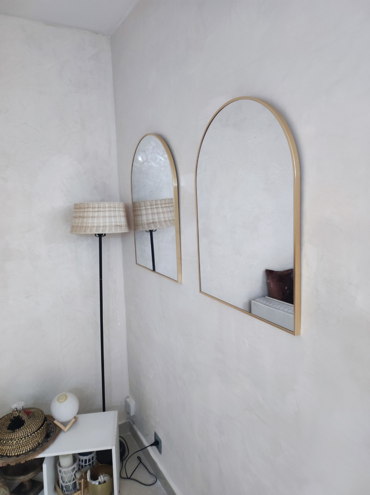
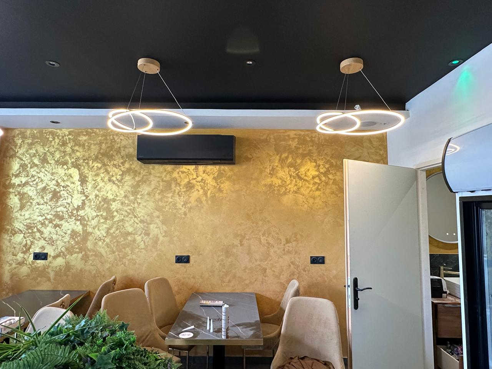
Nos réalisations murs & déco murale

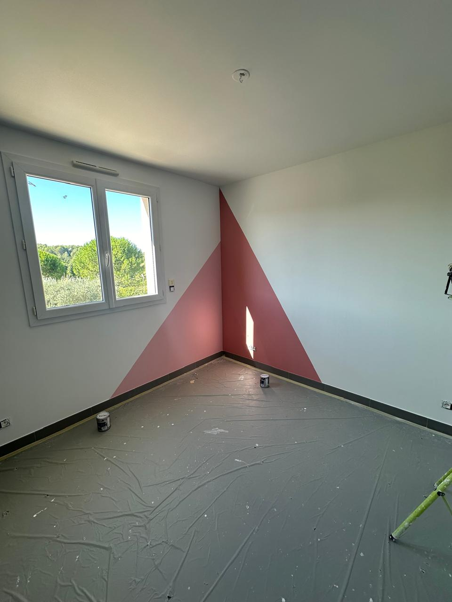

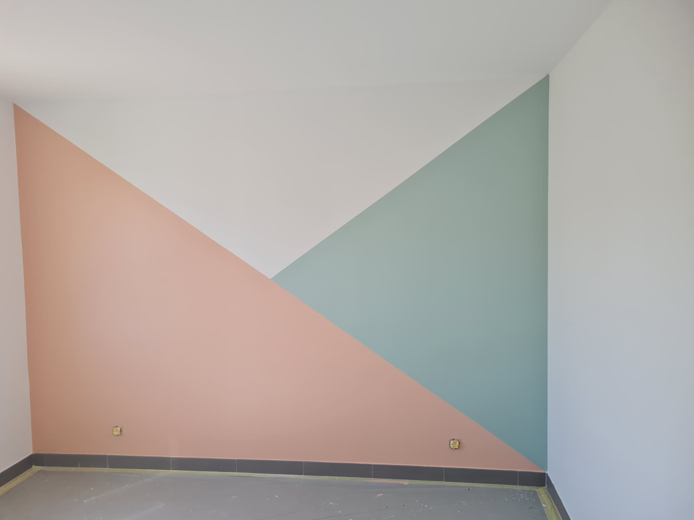
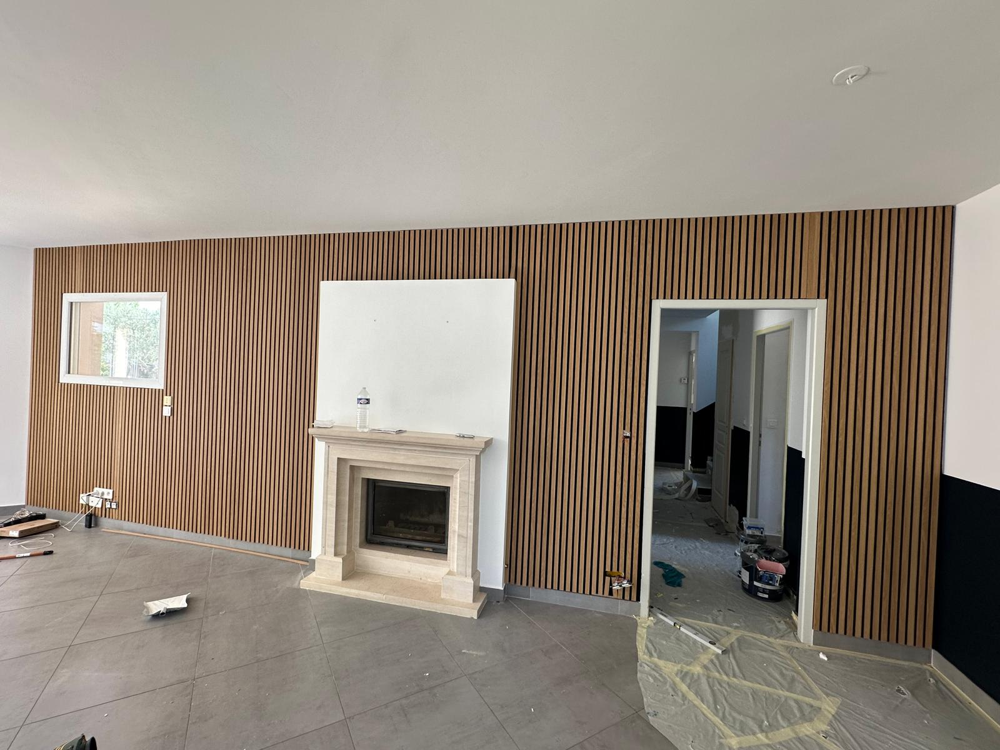
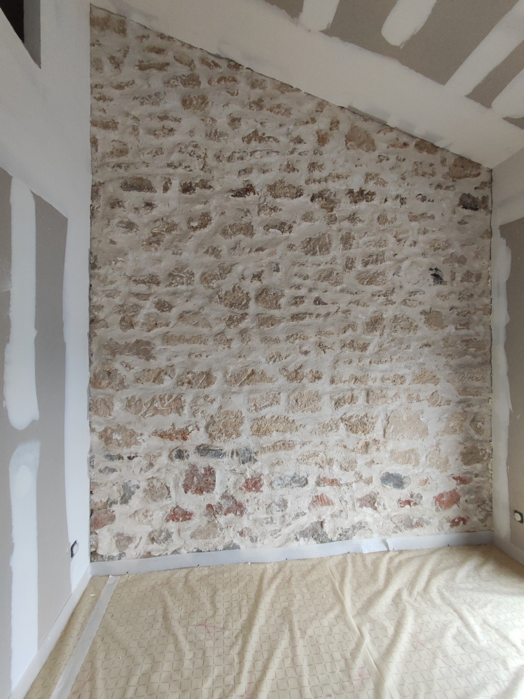


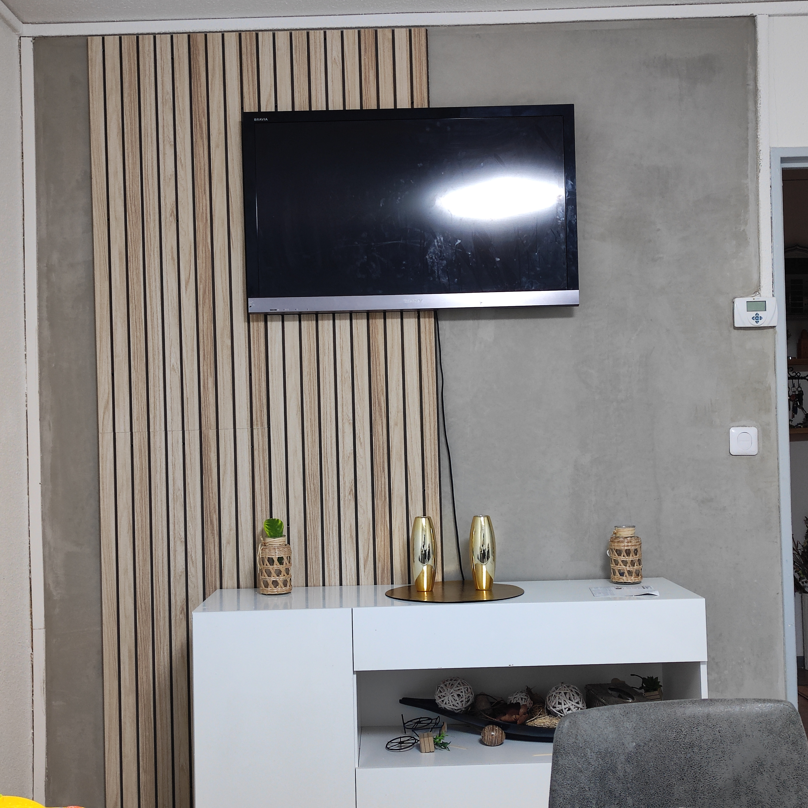

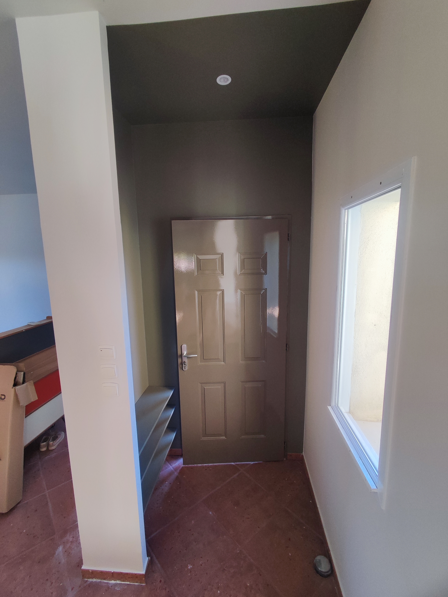
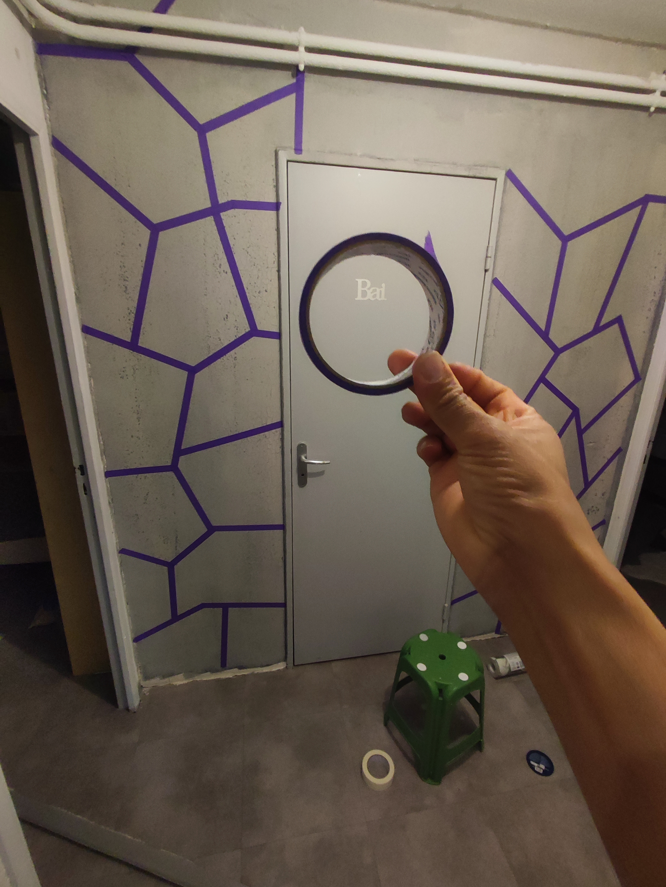
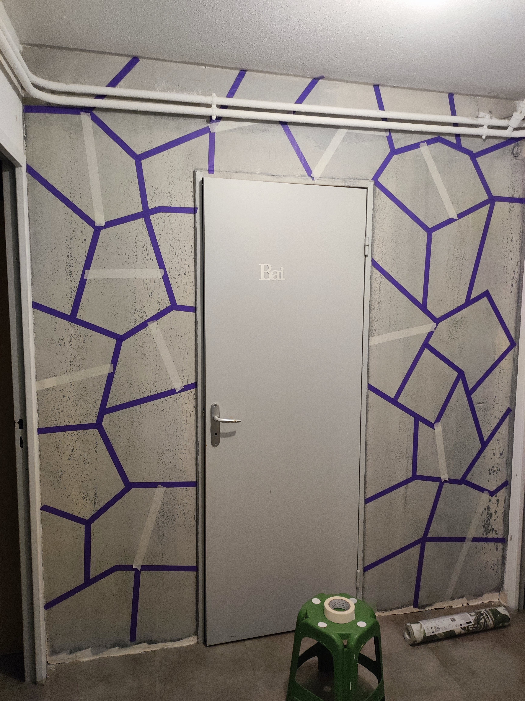

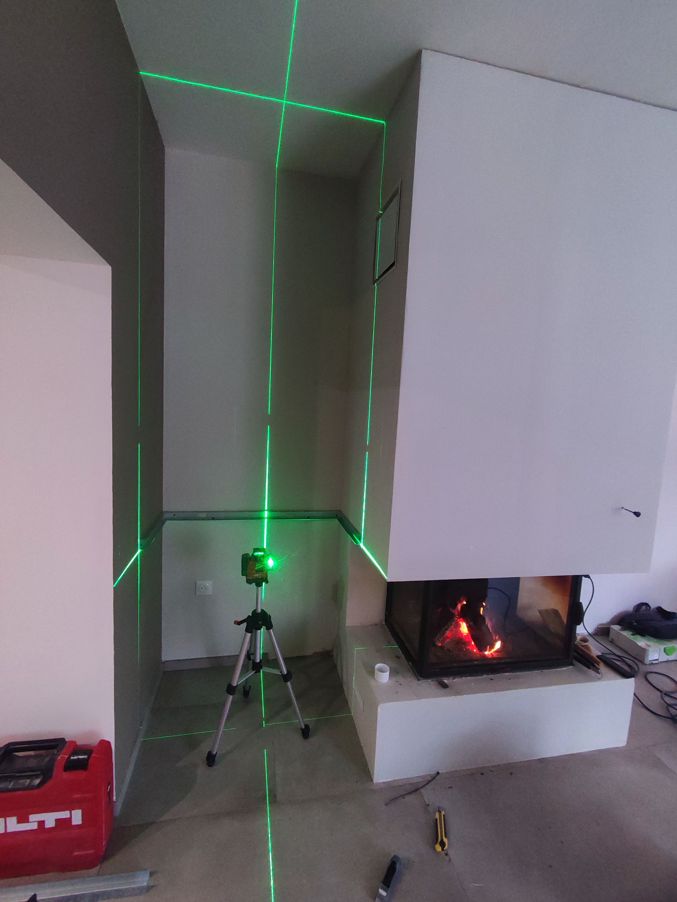

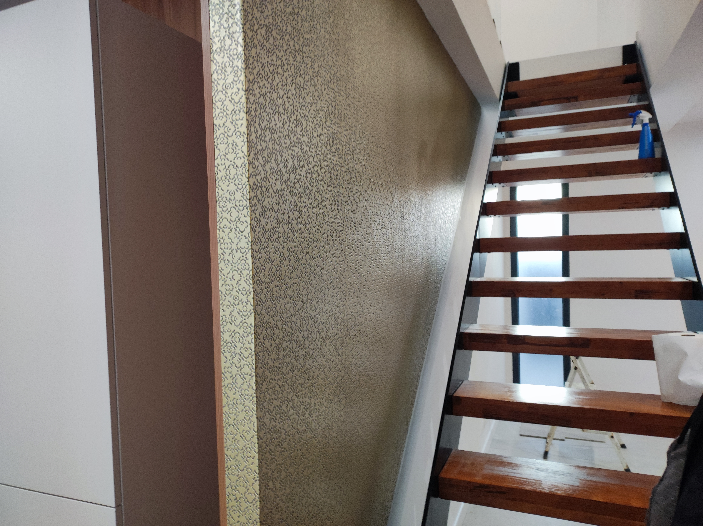
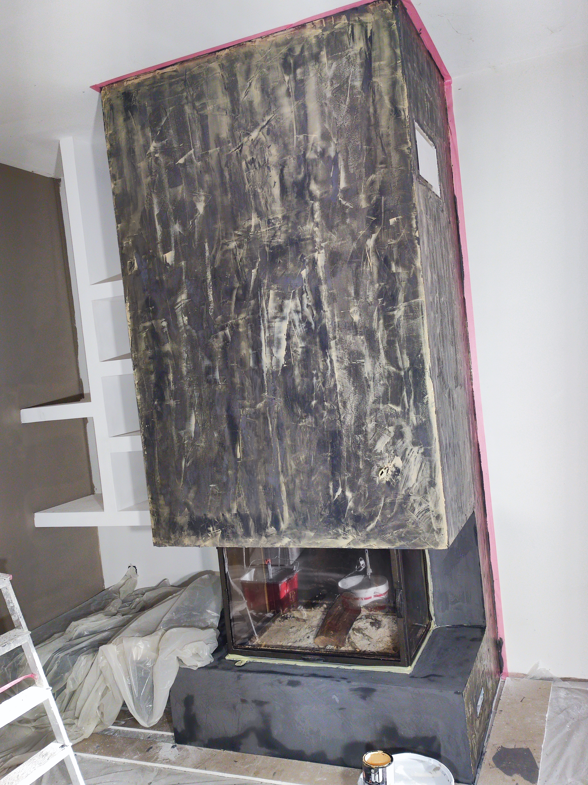

Nos prestations murs, plafonds & déco murale
- Peinture acrylique mate, velours ou satinée : adaptée à la luminosité et à l’usage de chaque pièce (salon, chambres, couloirs, cuisine, salle de bain).
- Ratissage intégral et enduit de finition : remise à neuf de murs abîmés, anciens crépis lissés ou reprises après détapissage.
- Peinture de plafonds sans traces de reprise : mat absolu anti-reflets pour gommer les irrégularités sous lumière rasante.
- Décoration murale et murs d’accent : associations de teintes, soubassements, têtes de lit, pans colorés et finitions minérales.
- Traitement préalable des supports : lessivage, grattage des zones non adhérentes, primaire anti-taches (nicotine, suie, anciennes auréoles).
Bien choisir sa finition selon la pièce
Pour les plafonds, nous privilégions une peinture mate profonde qui absorbe la lumière et masque les légers défauts de planéité. Dans les pièces de vie et chambres, le velours offre le meilleur équilibre entre rendu feutré élégant et facilité de nettoyage.
Dans les cuisines, salles de bain et zones de passage (entrées, cages d’escalier), une peinture satinée ou lessivable haute résistance protège durablement vos murs contre l’humidité, les projections et les frottements du quotidien.
TVA réduite & conseil couleurs : Pour les logements achevés depuis plus de 2 ans, vos travaux bénéficient de la TVA réduite. Nous vous conseillons sur le choix des teintes et finitions directement sur place lors de la visite gratuite.
Questions fréquentes
Combien de couches de peinture appliquez-vous sur les murs et plafonds ?
Nous appliquons systématiquement une sous-couche d’impression adaptée si nécessaire, suivie de deux couches de finition pour obtenir une couleur profonde, uniforme et durable.
Faut-il vider complètement la pièce avant votre intervention ?
Pas nécessairement. Si vous ne pouvez pas tout déplacer, nous regroupons le mobilier au centre de la pièce et le protégeons intégralement sous bâche plastique neuve.
Pouvez-vous peindre après avoir retiré un ancien papier peint ?
Oui, nous assurons la dépose complète, le lessivage de l’ancienne colle, l’enduisage de ratissage et la mise en peinture pour un mur parfaitement lisse.